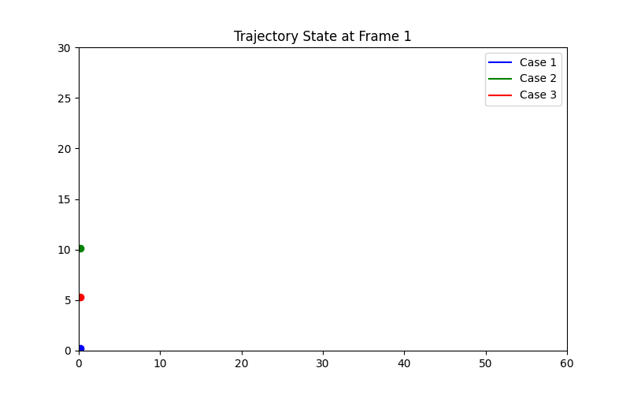
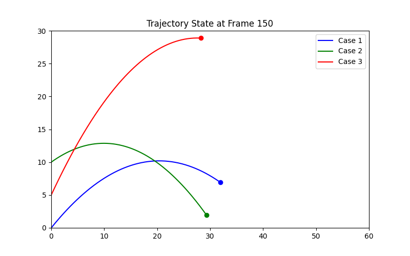
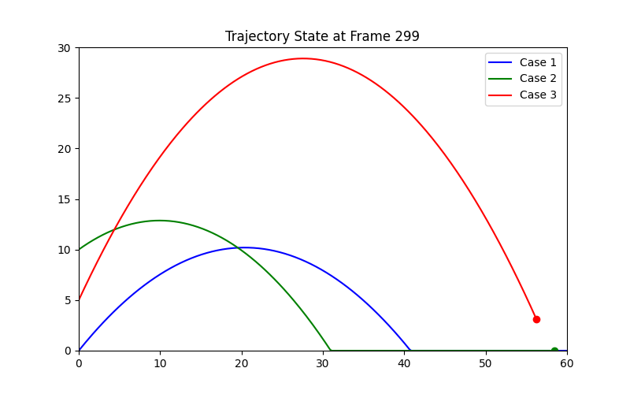
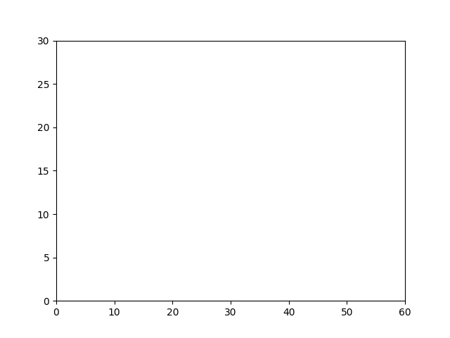

import numpy as np import matplotlib.pyplot as plt import matplotlib.animation as animation G_CONST = 9.81
def get_phys_params(y0, v0, theta, g=G_CONST):
angle_rad = np.radians(theta)
vx0 = v0 * np.cos(angle_rad)
vy0 = v0 * np.sin(angle_rad)
tf_general = (vy0 + np.sqrt(vy0 ** 2 + 2 * g * y0)) / g
xf_general = vx0 * tf_general
h_max_standard = (v0 ** 2 * (np.sin(angle_rad) ** 2)) / (2 * g)
h_max_general = y0 + (vy0 ** 2) / (2 * G_CONST)
return tf_general, xf_general, h_max_general, h_max_standard
if __name__ == '__main__':
initial_conditions = [
{'y0': 0, 'v0': 20, 'angle': 45},
{'y0': 10, 'v0': 15, 'angle': 30},
{'y0': 5, 'v0': 25, 'angle': 60}
]
num_cases = len(initial_conditions)
colors = ['b', 'g', 'r']
max_tfs = []
case_xf_list = []
case_hmax_phys_list = []
for i, cond in enumerate(initial_conditions):
tf, xf, h_phys, _ = get_phys_params(cond['y0'], cond['v0'], cond['angle'])
max_tfs.append(tf)
case_xf_list.append(xf)
case_hmax_phys_list.append(h_phys)
max_tf_total = max(max_tfs)
num_data_pts = 300
t_unified = np.linspace(0, max_tf_total, num_data_pts)
full_trajectory_data = []
for i, cond in enumerate(initial_conditions):
angle_rad = np.radians(cond['angle'])
vx0 = cond['v0'] * np.cos(angle_rad)
vy0 = cond['v0'] * np.sin(angle_rad)
x_data = vx0 * t_unified
y_data = cond['y0'] + vy0 * t_unified - 0.5 * G_CONST * t_unified ** 2
landing_idx = np.searchsorted(t_unified, max_tfs[i])
if landing_idx < num_data_pts:
y_data[landing_idx:] = 0.0
full_trajectory_data.append((x_data, y_data, landing_idx, case_hmax_phys_list[i]))
fig, ax = plt.subplots(figsize=(10, 6))
global_x_max = max(case_xf_list)
global_y_max = max(case_hmax_phys_list)
ax.set_xlim(0, global_x_max * 1.05)
ax.set_ylim(0, global_y_max * 1.1)
ax.set_xlabel('Horizontal Distance [m]')
ax.set_ylabel('Vertical Height [m]')
ax.set_title('Simultaneous Trajectories of Three Balls')
ax.grid(True)
legend_handles = []
for i, cond in enumerate(initial_conditions):
label = rf"Case {i + 1}: $y_0={cond['y0']}, v_0={cond['v0']}, \theta={cond['angle']}^\circ$"
dummy_line, = ax.plot([], [], color=colors[i], marker='None', linestyle='-')
legend_handles.append(dummy_line)
ax.axhline(case_hmax_phys_list[i], color=colors[i], linestyle='--', label=f'Peak for Case {i + 1}')
ax.legend(handles=legend_handles, title='Initial Conditions $(y_0, v_0, \\theta)$\nPeak lines derived generally.')
lines_so_far = [ax.plot([], [], color=colors[i], alpha=0.5)[0] for i in range(num_cases)]
ball_points = [ax.plot([], [], color=colors[i], marker='o', markersize=10, linestyle='None')[0] for i in
range(num_cases)]def update_concurrent_func(frame_idx):
for i in range(num_cases):
x_raw, y_raw, landing_idx, _ = full_trajectory_data[i]
if frame_idx <= landing_idx:
lines_so_far[i].set_data(x_raw[:frame_idx + 1], y_raw[:frame_idx + 1])
else:
lines_so_far[i].set_data(x_raw[:landing_idx + 1], y_raw[:landing_idx + 1])
if frame_idx <= landing_idx:
ball_points[i].set_data([x_raw[frame_idx]], [y_raw[frame_idx]])
else:
ball_points[i].set_data([x_raw[landing_idx]], [0.0])
return lines_so_far + ball_points
ani = animation.FuncAnimation(fig, update_concurrent_func, frames=num_data_pts,
interval=1000 * max_tf_total / num_data_pts, blit=True)
plt.tight_layout()
plt.show()


